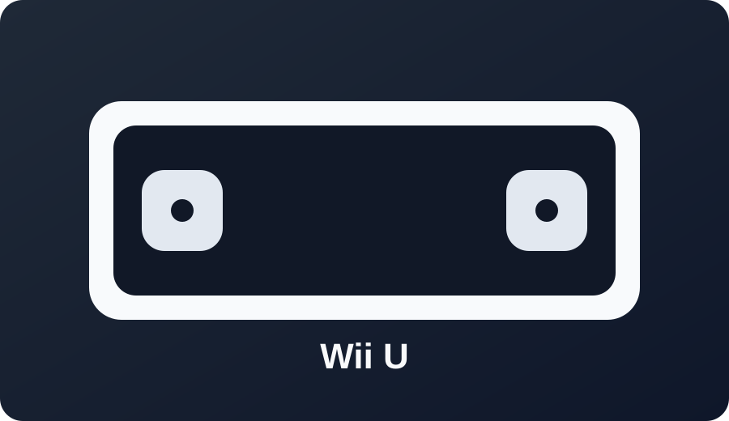

Wii U

Best path: Tiramisu (or Aroma) depending on your preferred setup.
Check region and firmware (5.5.x series) before installing.
Open Wii U Wizard
Best path: Tiramisu (or Aroma) depending on your preferred setup.
Check region and firmware (5.5.x series) before installing.
Open Wii U Wizard